上次我描述了递归类型，展示了如何将其写为代数方程式，然后您可以求解方程式以推断出有关类型的有趣事实。在本文中，我将解释对类型进行演算的含义。
Zippers
常规的Haskell列表是一个链接列表。 尽管它们易于定义且易于使用，但它们也有缺点。如果要将元素添加到长度为n的列表，则需要O(n)时间。在列表中途访问或修改元素也很慢。链接列表不支持有效的随机访问。
您可以使用数组解决此问题，但不可变数组有其自身的问题。例如，如果您希望数组的元素在内存中是连续的，则数据共享会更加困难。
幸运的是，并非所有应用程序都需要随机访问。有时，您只想跟踪列表中的位置，并能够在列表中四处移动，并可以随时修改元素。
这正是zipper所提供的功能，zipper是一种数据结构，具有指向可分辨位置的指针，称为focus。
List Zippers
你可以为任何数据结构写一个zipper拉链，但我将重点放在列表上。
要存储指针，我们可以用一个Int将列表包装起来，该Int将当前位置存储在focus中。
不过，这充满了各种各样的困难，而且它不符合我们对focus中元素的高效访问的要求。
相反，我们定义了一个新类型，它由focus中的元素和一对列表组成，其中一个列表包含focus之前的元素，另一个包含focus之后的元素, 示意图如下:
focus中的元素在中心，两个列表在两侧。在Haskell中，我们将写為:1
data Zipper a = Z [a] a [a]
为了使拉链有用，我们需要定义一些函数来左右移动焦点。
出于效率方面的考虑，我们以相反的顺序存储第一个列表-我们需要从列表的末尾（而不是头）有效地添加和删除元素：1
2left (Z (l:ls) c rs) = Z ls l (c:rs)
right (Z ls c (r:rs)) = Z (c:ls) r rs
如果您想了解有关zippers的更多信息，那么Learn You a Haskell的最后一章将进行出色的介绍。
One-Hole Contexts
zipper是一种product类型-它是两个as列表和一个a列表的product。
记住, 列表为L(a)= 1/(1-a)，列表拉链LZ(a)表示为:
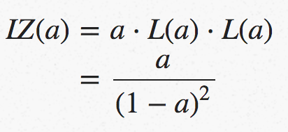
因为zipper是一种product类型，所以可以将它分开，将其分解为一个单独的数据，并与两个列表配对。这两个列表告诉我们focus在哪里，我们通过填写focus所在的数据来完成zipper。代数上我们有:
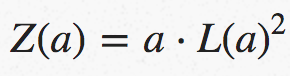
这显然等同于前面的表达式。product的第一部分只是一段数据，我们可以把第二部分看作是一个有hole(洞)的数据结构当我们用一些数据来配对’填充’这个hole(洞)时，我们会得到一个zipper。
此’带hole(洞)的数据结构’使用one-hole context(单洞上下文)的名称。对于列表拉链，如下所示：
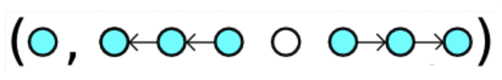
空圆圈是一个hole(孔)，代表无数据-它是数据的占位符。不包含数据的类型是unit(单位)类型()，因此我们可以说孔的类型是().
列表拉链没有什么特别的-任何拉链都可以分解为one-hole上下文，并且一条数据可以填充hole(洞)。
One-Hole Contexts for Tuples
我说过，您可以为任何数据类型编写一个拉链，所以让我们为元组编写一些拉链-也就是说，$a^n$形式的类型代表某个整数n。
One-Tuples
最简单的情况是一元组，它只是一个数据片段。一元组的拉链很简单-只有一个数据位置，所以只有一个focus(焦点), 一元组a的拉链只是一个a。
但是请记住，zippers是与one-hole上下文配对的一段数据，那么one-hole上下文是什么？只有一个地方可以放这个hole(洞)，一旦我们在一段数据中放了一个hole(洞)，我们就只剩下这个洞了！示意图上，数据与one-hole上下文的配对如下所示:1
(a,∘)
one-hole上下文的类型必须为()或1，这样，当我们将其与数据a配对时，我们将再次获得a。
Two-Tuples
在两元组中，该hole(洞)有两个可能的位置。请记住，sum表示一个选择，无论是左侧构造函数还是右侧构造函数，数据和one-hole上下文的配对如下所示:1
(a,(∘,a)+(a,∘))
请记住，hole的类型为1，one-hole上下文的类型为a + a或2a。
Three-Tuples
在三元组中，该hole有三个可能的位置。数据和one-hole上下文的配对看起来像:1
(a,(∘,a,a)+(a,∘,a)+(a,a,∘))
one-hole上下文的类型为a²+a²+a²或3a²。
Finding the pattern(寻找模式)
也许您已经看到了这种模式。 左列是n = 1、2、3的n元组的类型，右列是其相应的拉链:
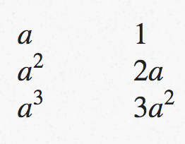
如果你研究过任何微积分，你会立即发现这个模式——对于一个类型为a^n的n元组，拉链的类型是na^n-1，这正是a^n的derivative(导数)。
实际上，这种模式始终适用！Conor McBride在一篇论文中指出了这一点，其标题给出了关键的见解:
The Derivative of a Regular Type is its Type of One-Hole Contexts(常规类型的导数是其one-hole上下文的类型)
如果采用类型表达式并对其进行区分，则结果是该类型的one-hole上下文类型。这样就很容易找出如何为任意数据类型编写zipper。
Calculus of Types(类型演算)
我将使用符号∂a来表示’对a求导’。您可能已经熟悉了用于区分的符号d/da, 这没有什么不同，但它的优点是可以在一行上排版！
我们能把一个类型的导数和它的one-hole上下文之间的类比推多远？
在所有上下文中区分类型是否有效，还是必须小心? 我们当然应该检查微分运算在应用于我们已经知道的类型时是否有意义，例如.
Constants
这是微积分的一条简单规则–任何常数的导数为零:
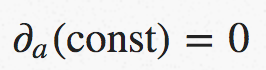
要对类型解释这一点，请记住派生运算符d/d a在包含类型A的数据的数据结构中创建了hole。此公式表示，如果类型没有任何类型A的数据，则其one-hole上下文为Void，即您不能创建它的任何实例。
Sums
导数的求和规则是，对于任何f(a)和g(a)，sum与分别求和然后在求和相同:
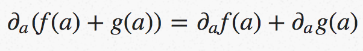
这告诉我们，在sum类型中创建一个hole相当于在每个summands(被加数)中创建一个hole，并取它们的和。在更明确的语言中，如果F a和G a是具有one-hole上下文DF a和DG a的类型，则1
type Sum a = Add (F a) (G a)
one-hole上下文為:1
type DSum a = Add (DF a) (DG a)
Products
在微积分中，product的导数由莱布尼兹的product规则给出:
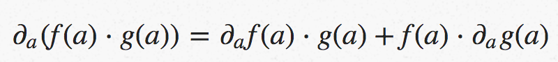
解释为有关类型的说明，这告诉我们在两种类型的product中打hole(孔)等同于在第一种类型中打孔(并保留第二种形式)或在第二种类型中打孔(并保留第一个原样)。就是说，1
type Prod a = (F a, G a)
的one-hole上下文為:1
type DProd a = Add (DF a, G a) (F a, DG a)
Composition
我们还没见过composition。如果数据结构F包含G a类型的元素，则会发生这种情况。1
data Compose f g a = Compose (f (g a))
其中f和g的种类为* -> *，而a的种类为*，尽管保持语法简洁并只写f(g a)更简单。
在微积分中，链式规则告诉我们如何区分compositions(组成):
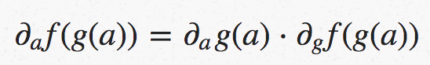
作为一个类型方程，这意味着要在分层数据结构中创建一个hole(孔)，我们需要一个product,一半的product告诉我们孔在外部结构中的位置，另一半则跟踪内部结构中的孔。也就是说，1
type Comp a = F (G a)
的one-hole上下文為:1
type DComp a = (DG a, DF (G a))
Deriving Zippers
我说过，知道ADT的派生与其one-hole上下文类型相对应，就可以轻松地为任意数据类型派生拉链。现在，我将证明该主张的合理性。
List Zippers
列表的类型是:
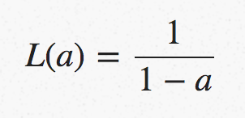
我们可以使用quotient(商)规则和chain(链)规则对此进行区分，發現:
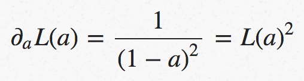
它说列表的one-hole上下文是一对列表，正如我们之前所看到的。为了获得列表拉链，我们将a与一对列表L(*a)進行product.
Tree Zippers
请记住，二叉树T(a)的类型由递归方程定义:
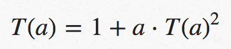
我们可以像上一篇文章一样求解T(a)，然后区分结果。但是，使用隐式差异来区分上述表达式要容易得多，得到:
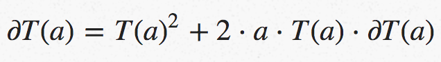
然后我们可以针对dT/da解决此问题，找到:
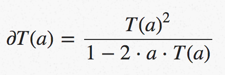
为了理解这一点，请记住类型1/(1-x)与x列表中的类型L(x)同义。
所以树拉链是:
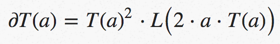
也就是说，树的one-hole上下文是两棵树和一个包含类型元素(bool，a，tree a)的列表的product。看起来是这样的:
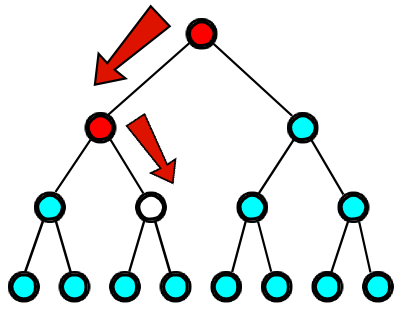
hole是我们当前的位置，focus(焦点)。洞的下面是两棵树，它们容纳了我们还没有穿过的那部分树。在这张照片中，它们都是单元素树。
回到树顶的红色节点的序列是past(过去)-我们经过的树元素最终在hole(孔)处结束。
每个节点都与一个Bool相关联，该Bool告诉我们经过该节点后是左分支还是右分支，以及一个Tree a，其中包含所有我们未沿另一条路径错过的元素。
练习：为二进制树编码拉链，记住拉链是与数据配对的one-hole上下文。您需要编写left/right函数，以在特定节点上使用left或right路径，并使用up返回上一级树。
练习：玫瑰树是每个节点上具有任意多个分支的树。在Haskell中，您可以通过以下方式定义它们:1
data Rose a = Rose a [Rose a]
玫瑰树拉链长什么样？
Next Time
在这篇文章中，我们了解了采用ADT的派生(对ADT求导)是什么意思，以及如何操作类型代数来自动为任意数据类型派生zipper。
下一次我将讨论给类型的减法和除法赋予一个意义，我可能会继续提到combinatorial species(组合种类)。